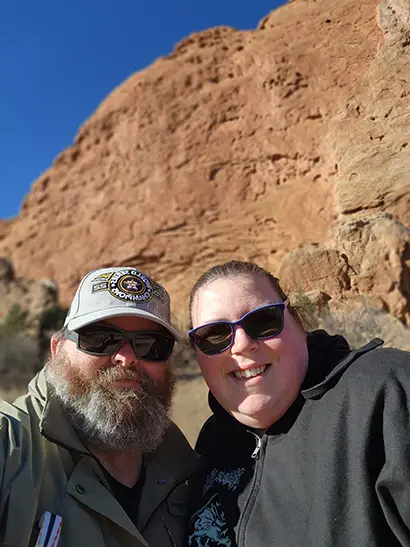
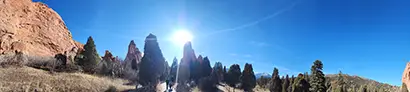

Visit Colorado Springs
Here in Colorado Springs we have this great place called Garden of the Gods which is a park for people to go to year round it sits at an outstanding 6,400 feet.
Things to do while at Garden of the Gods
Horseback Riding
You are able to go on horseback riding tours brought to you by the Academy Riding Stables.

Hiking and Rock Climbing
While you are able to hike the paths that are for the main park to go of the main trail you are required to have a permit which you are able to get. To rock climb you will also need a permit for everyone going to go climbing and you will need to have your own gear. Maybe you want to go rock climbing and dont have your own gear you can look into Front Range Climbing Company. They offer 4 to 6 hr private climbing package.
Garden of the Gods Visitor and Nature Center
Most of the things that you may want to sign up for you can do right here. If you just want to go on the man made trails you do not have to stop by but just go have fun and enjoy the bueaty of nature. For those that want merchandise for those that are not around the area please feel free to stop buy so you can always have a memory. 